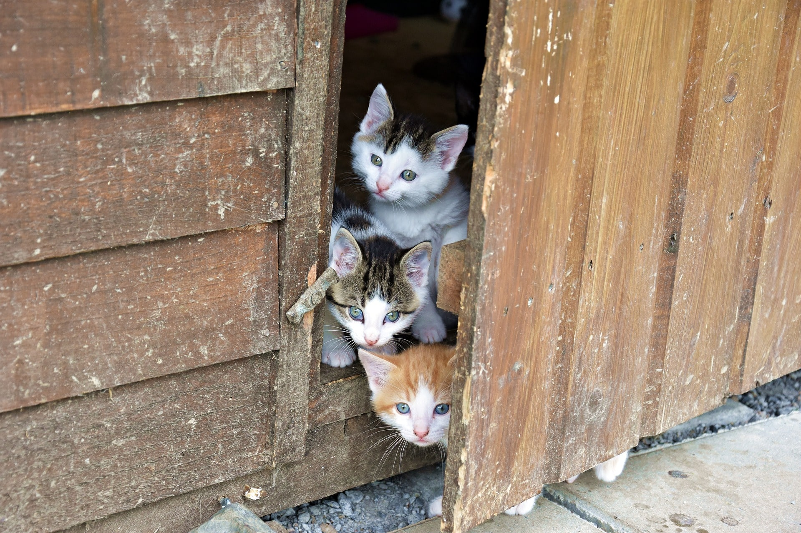

Registra a tu Mascota perdida
Publica aquí tu mascota perdida o busca entre las que se han reportado como perdidas.


Mas que un animal, es FAMILIA
Registrate y podras publicar sobre tu
mascota pérdida o reportar sobre una mascota.
Dame una Pata desea ayudar a todos los dueños y mascotas a que se reencuentren, ya que una mascota es un miembro más de la familia. Brindando un servicio de anuncio de mascotas perdidas y reportadas.
Ser una plataforma al servicio de la comunidad, proporcionando el medio para poder difundir la información sobre una mascota perdida, logrando ser un medio de difusión que contribuya a una sociedad en armonía con sus animales.
En Dame una Pata nos preocupamos por encontrar a ese pequeño miembro de la familia, un ser indefenso que solo busca el amor de sus seres queridos. Esta plataforma brinda ese medio para difundir el extravío de esa mascota tan querida
En Dame una Pata tenemos en nuestro albergue pequeños seres que quieren dar amor,encontraras diferentes peluditos que buscan un hogar, dales una oportunidad ellos te lo agradeceran.
Dirección: Calle "C" Nro.1, Zona Pampahasi
Facebook: Dame_unaPata
Telf: 2222222
Cel: 666666666
Correo: dameunapata@gmail.com